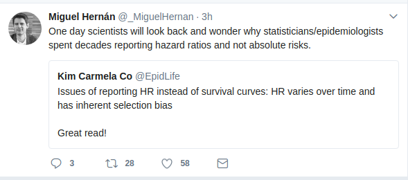

An R package for smooth-in-time fitting of parametric hazard functions and compute absolute risks.

Installation
The package is hosted on CRAN, and therefore it can easily be installed via install.packages("casebase").
Alternatively, you can install the development version from GitHub with:
install.packages("pacman") pacman::p_install_gh("sahirbhatnagar/casebase")
Vignette
See the package website for example usage of the functions. This includes
Class structure
The casebase package uses the following hierarchy of classes for the output of fitSmoothHazard:
casebase:
singleEventCB:
- glm
- gam
- gbm
- cv.glmnet
CompRisk:
- vglmThe class singleEventCB is an S3 class, and we also keep track of the classes appearing below. The class CompRisk is an S4 class that inherits from vglm.
Credit
This package is makes use of several existing packages including:
-
VGAMfor fitting multinomial logistic regression models -
survivalfor survival models -
ggplot2for plotting the population time plots -
data.tablefor efficient handling of large datasets
Citation
To cite casebase in publications, please use
citation('casebase')
Bhatnagar S, Turgeon M, Saarela O and Hanley J (2017).
casebase: Fitting Flexible Smooth-in-Time Hazards and Risk Functions via Logistic and Multinomial Regression.
R package version 0.1.0, <URL:https://CRAN.R-project.org/package=casebase>.
Hanley, James A., and Olli S. Miettinen.
Fitting smooth-in-time prognostic risk functions via logistic regression.
International Journal of Biostatistics 5.1 (2009): 1125-1125.
Saarela, Olli. A case-base sampling method for estimating recurrent event intensities.
Lifetime data analysis 22.4 (2016): 589-605.
If competing risks analyis is used, please also cite:
Saarela, Olli, and Elja Arjas. Non-parametric Bayesian Hazard Regression for Chronic Disease Risk Assessment.
Scandinavian Journal of Statistics 42.2 (2015): 609-626.For BibTeX users:
@Manual{casebase-package,
title = {casebase: Fitting Flexible Smooth-in-Time Hazards and Risk Functions via Logistic and Multinomial Regression},
author = {Sahir Bhatnagar and Maxime Turgeon and Olli Saarela and James Hanley},
year = {2017},
note = {R package version 0.1.0},
url = {https://CRAN.R-project.org/package=casebase},
}
@Article{,
title = {Fitting smooth-in-time prognostic risk functions via logistic regression},
author = {James A Hanley and Olli S Miettinen},
journal = {International Journal of Biostatistics},
volume = {5},
number = {1},
pages = {1125--1125},
year = {2009},
publisher = {Berkeley Electronic Press},
}
@Article{,
title = {A case-base sampling method for estimating recurrent event intensities},
author = {Olli Saarela},
journal = {Lifetime data analysis},
volume = {22},
number = {4},
pages = {589--605},
year = {2016},
publisher = {Springer},
}
@Article{,
title = {Non-parametric Bayesian Hazard Regression for Chronic Disease Risk Assessment},
author = {Olli Saarela and Elja Arjas},
journal = {Scandinavian Journal of Statistics},
year = {2015},
volume = {42},
number = {2},
pages = {609--626},
publisher = {Wiley Online Library},
}References
-
Hanley, James A, and Olli S Miettinen. 2009. “Fitting Smooth-in-Time Prognostic Risk Functions via Logistic Regression.” The International Journal of Biostatistics 5 (1).
-
Saarela, Olli, and Elja Arjas. 2015. “Non-Parametric Bayesian Hazard Regression for Chronic Disease Risk Assessment.” Scandinavian Journal of Statistics 42 (2). Wiley Online Library: 609–26.
-
Saarela, Olli. 2015. “A Case-Base Sampling Method for Estimating Recurrent Event Intensities.” Lifetime Data Analysis. Springer, 1–17.
Latest news
You can see the most recent changes to the package in the NEWS.md file
Code of Conduct
Please note that this project is released with a Contributor Code of Conduct. By participating in this project you agree to abide by its terms.